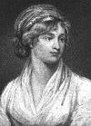

Çığır açan feminist filozof Mary Wollstonecraft (1759–1797), 1792 tarihli ünlü yapıtı A Vindication of the Rights of Woman (Kadın Hakları Savunusu) adlı eseri ile tanınmaktadır. Kitap cinsiyet eşitliğinin savunusunu yapmış ve tarihçiler tarafından feminist hareketin başlangıcı olarak değerlendirilmiştir. Feminist hareket 19. yy’da Amerika ve Avrupa’da önemli bir yaygınlık kazanacaktı. Wollstonecraft, yaşadığı dönemde ise karmaşık kişisel yaşamı, politik radikallerle olan ilişkileri ve vakitsiz ölümü ile tanınmıştır.

Wollstonecraft Londra’nın doğu yakasında doğdu. Yedi çocuklu bir ailenin ikinci çocuğuydu. Neredeyse hiç formel eğitim görmemişti. Buna karşılık bolca Shakespeare, Milton ve İncil okuyordu. 1784 yılında öğretmen oldu. Bu süreçte kazandığı deneyimler ona ilk kitabını yazması için yardımcı oldu: Thoughts on the Education of Daughters: With Reflections on Female Conduct in the More Important Duties of Life (Kızların Eğitimi Üzerine Düşünceler: Kadınlar Hayatta Nasıl Daha Önemli Bir Rol Oynayabilirler? / 1787). Ertesi yıl bir roman yazdı: Mary, A Fiction (Mary: Roman). Mahlas kullanarak kadınlar için bir antoloji yayınladı.
Wollstonecraft’ın belirgin bir biçimde politik olan ilk kitabı A Vindication of the Rights of Men (İnsan Haklarının Savunusu / 1790), Fransız Devrimi’nin ardından İngiltere’de gelişen tartışmaların ortasında yayınlandı. Pek çok İngiliz Fransa’daki şiddetten ürkmüştü. Wollstonecraft ise Fransa’daki monarşinin devrilmesini destekleyen radikallerin safında yeraldı. A Vindication of the Rights of Men’in ardından onun devamını getirmek için çalışmaya başladı. A Vindication of the Rights of Woman isimli kitabında evlilik kurumunu ve kadınları dışladığı için eğitim sistemini eleştirdi. Kadınların erkeklerle aynı yeteneklere sahip olduğunu savunuyordu. Ancak bu yetenekleri kullanmaları engelleniyordu.
Wollstonecraft 1792 yılında Paris’e gitti. Büyük Terör döneminde orada kaldı. Paris’teyken bir Amerikalı olan Gilbert Imlay (1754–1828) ile ilişki kurdu. İngilizler devrimci Fransa’da tehdit altında olduklarından Wollstonecraft tutuklanmamak için Imlay’ın eşi gibi davranıyordu. Çiftin, 1796 yılında ayrılmadan önce evlilik dışı bir de çocukları oldu.
Aynı yıl radikal İngiliz William Godwin (1756–1836) ile tanıştı. Ertesi yıl evlendiler. İlk çocuklarını doğurduktan sonra yaşanan komplikasyonlar nedeniyle otuz dokuz yaşında öldü.
Ek Bilgiler
1- Wollstonecraft’ın küçük kızı Mary (1797–1851) 1816 yılında şair Percy Bysshe Shelley (1792– 1822) ile evlendi ve 1818 yılında Frankenstein romanını yazdı. Wollstonecraft’ın büyük kızı Fanny Imlay (1794–1816) ise yirmi iki yaşındayken intihar etti.
2- Godwin, eşi Mary’nin ölümünün ardından “Memoirs of the Author of A Vindication of the Rights of Woman” (Kadın Hakları Savunusu’nun Yazarının Anıları) isimli bir biyografi kaleme aldı. Kitap onun ilişkilerini ve intihar teşebbüslerini fazla açık bir dille anlattığı için tartışmaya neden oldu. Buna rağmen onun hayatına dair en önemli kaynak olarak kabul edildi.
3- “A Vindication of the Rights of Woman” alaycı bir biçimde Wollstonecraft’ı en çok eleştirenlerden biri olan Charles Maurice de Talleyrand-Périgord’a (1754–1838) adanmıştır. Talleyrand-Périgord daha sonra ünlü bir Fransız diplomat ve kısa bir süre için Fransa Başbakanı olacaktı.